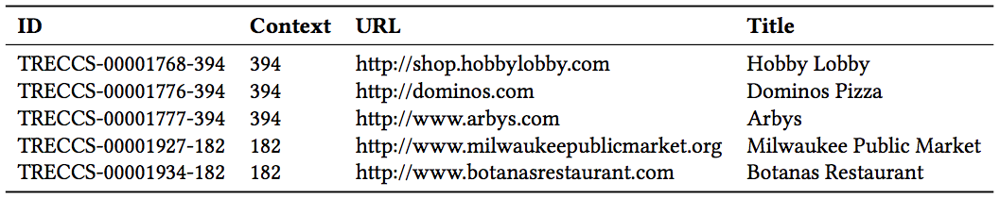
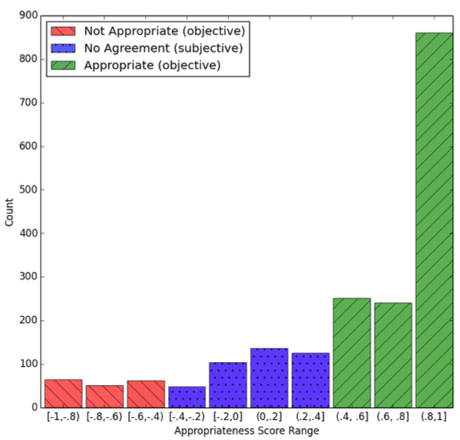
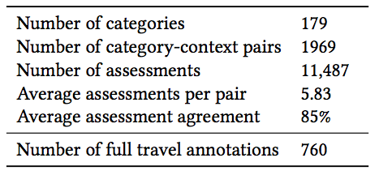
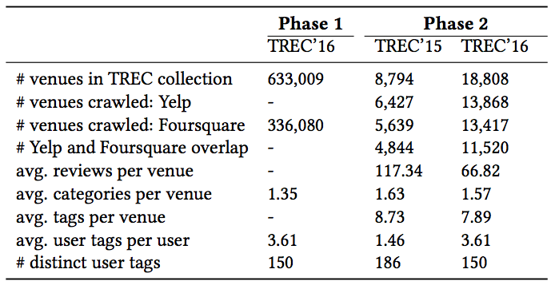

Data
TREC Contextual Suggestion
Throughout our participation in the TREC Contextual Suggestion track, we observed that the officially released data collection had many drawbacks. First, even though the organizers released a crawl of the collection in 2016, it is unstructured and does not introduce a homogeneous set of data. Hence most top-ranked systems ignored it and crawled their collections. For example in the following figure, we can see that every entry of the collection comes from a different source of information, and the source is often unrecognized:

Second, the collection has a set of contextual data such as type and duration of the trip. However, the contextual data was neglected by most of the participants. In particular, many of them just ignored the contextual information or used it with hand-crafted rule-based methods. It could be due to the current structure of the collection which does not give the researchers many options concerning context-aware recommendation.
In an attempt to address these limitations, we release a collection that was crawled very carefully to be homogeneous, cross-platform and context-aware. More specifically, we release the collection that we used for our participation at the TREC Contextual Suggestion track performing best in both phases of the track. The collection was crawled from two major LBSNs and comes with two crowdsourced contextual appropriateness collections. More details can be found in our SIGIR resource paper as well as the following:
-
"Contextual Appropriateness Features and Labels": The contextual appropriateness collection consists of 1,969 pairs of trip descriptors and venue categories as features. In order to enable researchers to train their models using the contextual appropriateness of venues, we created another collection providing ground truth assessments for the contextual appropriateness of the venue categories. It completes the contextual information (i.e., trip type, group type, trip duration) for 10% of the whole TREC collection. This collection contains 760 rows including the features we already created using crowdsourcing and the context-appropriateness labels for venues. The 10% of labeled data allows to model the venues’ contextual appropriateness given the users’ context and to make prediction for the remaining 90% of the data.
Below, you can see a histogram of venue-context appropriateness score ranges. We partition the histogram into 3 parts based on the scores range. Scores below −0.4 represent inappropriateness and score higher than +0.4 represent appropriateness. Scores between −0.4 and +0.4 do not provide much information and show no agreement among assessors (subjective task):

The following table summerizes the statistics of the two crowdsourced datasets:

The datasets are created using CrowdFlower and are both publicly available for research purposes. You can download them here. Please remember to cite our SIGIR resource paper if you use this dataset. You can find the BibTeX here.
-
"Cross-Platform Collection for Contextual Suggestion": The released collection contains more than 330K venues from Foursquare for TREC 2016 Contextual Suggestions track Phase 1 and 15,765 venues from both Foursquare and Yelp for TREC 2016 Contextual Suggestion Phase 2. As we observed in the data, there were many broken or unrelated links in the TREC collection (300K out of 600K). However, there were much fewer unrelated links for Phase 2 (3K out of 18K). For each venue, we release all available information: venue name, address, category, tags, ratings, reviews, check-in count, menu, opening hours, parking availability, etc. We release the collection that we used for our participation at the TREC Contextual Suggestion track performing best in both phases of the track. The collection was crawled from two major LBSNs: Foursquare and Yelp. We searched for the venues present in the TREC dataset on the LBSNs to find their corresponding profiles and verified the retrieved data very carefully to prevent adding any noise to the dataset. It is worth noting that more than half of the submitted systems to TREC 2016 had crawled data from either Yelp or Foursquare or both. More specifically, we observed that for 12 tasks, namely, the last 2 years with 2 phases each and taking into account the top 3 systems, 11/12 (=92%) of the systems had crawled data from one or both sources and 7/12 (=58%) of the systems crawled data from more than one LBSN. The release of this new collection will provide researchers with a unique opportunity to develop context-aware venue recommender systems under the same setting and data as one of the best-submitted systems in the TREC 2015 and 2016. This will enable them to compare their work with state-of-the-art approaches and explore the brand new venue-context appropriateness dataset.
Below you can find summerized statistics of the cralwed datasets:

The datasets are freely available for research purposes. Please contact me if you are interested in these datasets. More information about the datasets is available in our SIGIR resource paper. Please remember to cite our paper if you use the datasets.You can find the BibTeX here.
Format
Upon downloading the data, you get 2 compressed files (approximately 400MB in size). You can uncompress them using gzip, zip etc.
The first compressed file contains two CSV files, one of which is the contextual features and the other the contextual labels.
Each row of the CSV file for contextual features has these fields:
- ID: a unique identifier for the feature
- Trusted Judgements: the number of workers who judged this feature and were trusted
- Appropriateness Score: the level of agreement between workers, which is also the appropriateness score of the feature. This field ranges from -1 to +1 (absolutely inappropriate to absolutely appropriate)
- Category: the venue category for which the feature is calculated
- Context: one the context descriptors for which the feature is calculated
Below is an example row from the feature set:
ID Trusted Judgements Appropraiteness Score Category Context
85 7 0.4272 Museum Group type: Friends
Each row of the CSV file for contextual labels has these fields:
- ID: a unique identifier for the sample
- Trusted Judgements: the number of workers who judged this sample and were trusted
- Appropriateness Score: the level of agreement between workers, which is also the appropriateness score of the sample. This field ranges from -1 to +1 (absolutely inappropriate to absolutely appropriate)
- Category: the venue category for which the sample is labeled
- Full Context: the full context description for which the sample is annotated
Below is an example row from the contextual labels:
ID Trusted Judgements Appropraiteness Score Category Full Context
60 4 1 Park Holiday, Friends, Night out
The second compressed file contains all the crawled data in JSON format. Each JSON file contains information about a single venue. The files are named after the corresponding venue ID in the TREC collection (e.g., TRECCS-00000106-174). The JSON object is a dictionary with the following keys:
- Foursquare: contains a dictionary of all information gathered from Foursquare
- categories: list of categories associated to the venue
- keywords: list of taste keywords associated to the venue
- location: the address of the venue
- name: the name of the venue as mentioned in Foursquare
- overall_rating: the average rating of all user ratings
- phone: the phone number of the venue
- reviews_detail: list of user tips about the venue
- comment: full text of the tip
- taste_matches: list of all taste-related terms in the tips as identified by Foursquare
- Yelp: contains a dictionary of all information gathered from Yelp
- categories: list of categories associated to the venue
- subcategories: list of subcategories associated to the venue
- good_for: list of items that are marked as "good for" in Yelp
- location: the address of the venue
- name: the name of the venue as mentioned in Yelp
- openin_hours: list of opening hours for all weekdays
- overall_rating: the average rating of all user ratings
- phone: the phone number of the venue
- reviews_detail: list of user reviews about the venue
- comment: full text of the review
- date: the date that the review is written
- rating: user rating associated with the review
- user_id: ID of the user who left the review
- user_name: name of the user who left the review
- user_review_cnt: total number of the reviews the user has left on Yelp
- total_reivew_number: total number of user reviews for the venue
- url: link to the venue's homepage
Below is an example from the dataset: (content has been shortened)
{
"Foursquare": {
"categories": [
"Southern / Soul Food Restaurant",
"American Restaurant",
"Restaurant"
],
"keywords": [
"biscuits",
"grits",
...
],
"location": {
"addressLocality": "Charlotte",
"addressRegion": "NC",
"postalCode": "28203",
"streetAddress": "1820 South Blvd"
},
"name": "Tupelo Honey Cafe",
"overall_rating": 9.0,
"reviews_detail": [
{
"comment": "I can't find a bad dish,...
}
],
"taste_matches": [
"martini's",
"Rosemary",
"Lime",
"Shrimp",
...
]
},
"Yelp": {
"categories": [
"Southern",
"American (New)",
"Breakfast & Brunch"
],
"good_for": [
" brunch",
" kids",
" groups"
],
"location": {
"addressLocality": "Charlotte",
"addressRegion": "NC",
"postalCode": "28203",
"streetAddress": "1820 South Blvd"
},
"name": "Tupelo Honey Cafe",
"opening_hours": [
[
"11:00 am",
"9:00 pm"
],
...
],
"overall_rating": 4.0,
"phone": "(980) 225-9175",
"reviews_detail": [
{
"comment": "I've been dying to try this place so I stopped in. The menu is plentiful with appetizers, ...
"date": "2016-08-21",
"rating": 4.0,
"user_id": "http://www.yelp.com/user_details...",
"user_name": "...",
"user_review_cnt": 41
}
],
"total_review_number": "728",
"subcategories": ...,
"url": ...
}
}
@inproceedings{AliannejadiSigir17b,
author = {Mohammad Aliannejadi and Ida Mele and Fabio Crestani},
title = {A Cross-Platform Collection for Contextual Suggestion},
booktitle = {{SIGIR}},
pages = {1269--1272},
publisher = {{ACM}},
month = {August},
year = {2017}
}